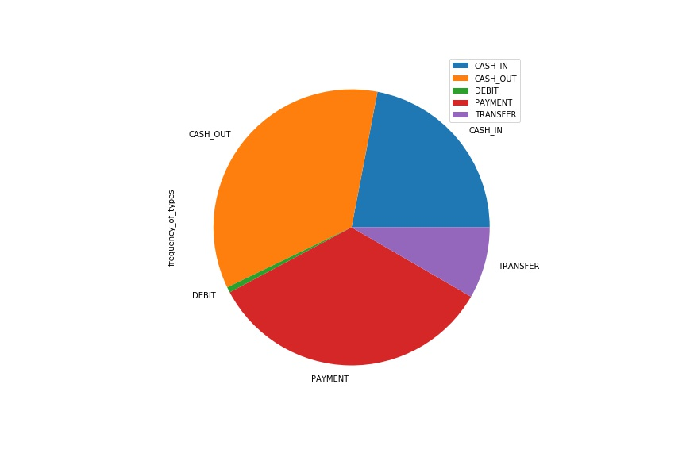
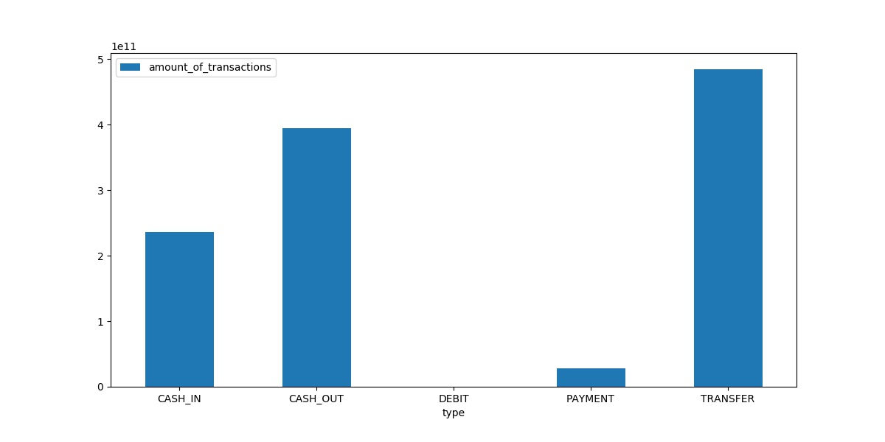
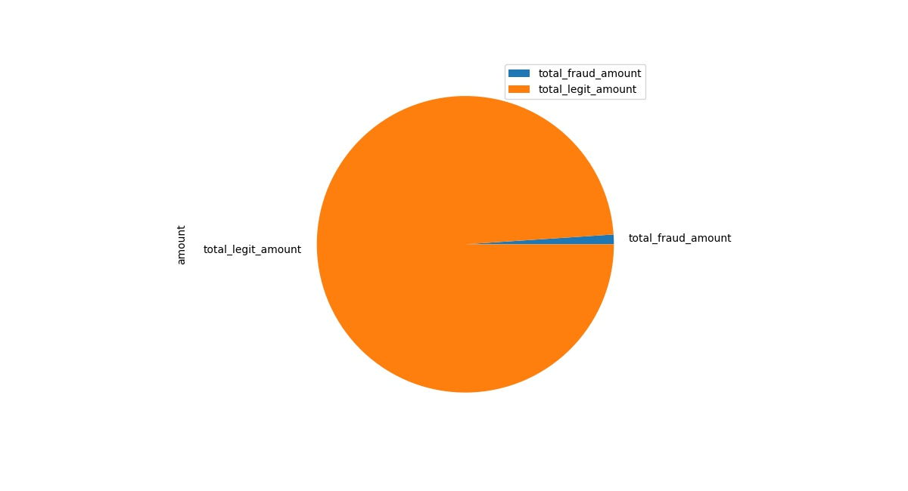
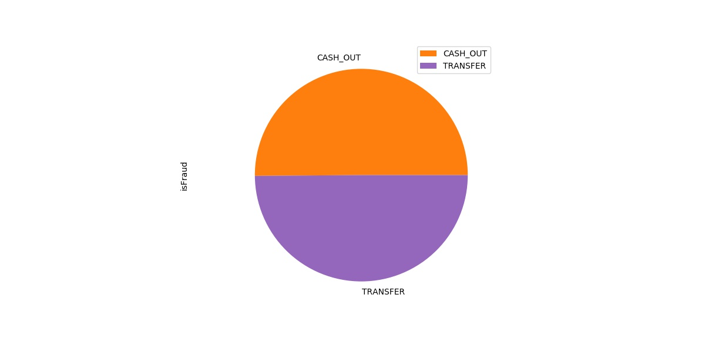
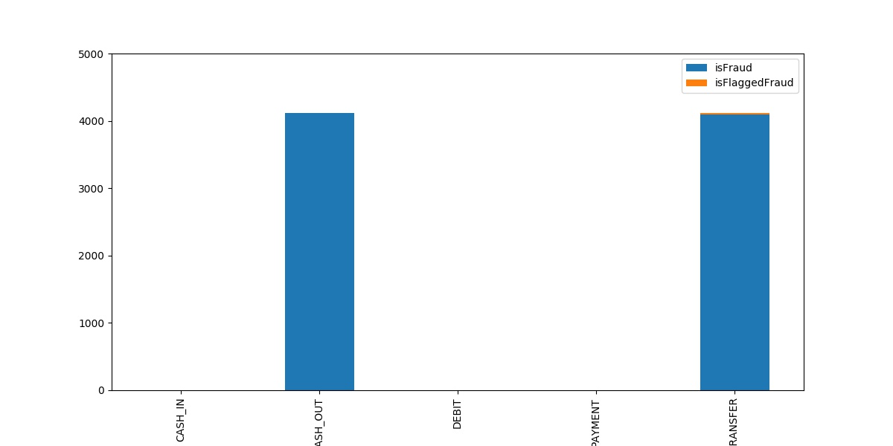

In the below plot we can see that majority of transaction are of type CASH_OUT and Payment with Debit being the least frequently used type.
In the below figure we can see that Transfer and Cash_out are responsible for most of the amount that is being transfered. But since Cash_out was one of the major type of transaction that was beiing used it fits perfectly however in the above figure we saw the Transfer was one of the least used type but it carries the most amount of money therefore there is higher chance of fraud being committed.
The below figure shows that the total amount of money involved in fraudulent transaction is very less as compared to the overall money involvedin the transaction.
The below figure shows that all the fraudulent transactions are happening in either Cash_out or Transfer types of transaction. In the previous figures we also saw that cash_out and transfer were also responsible for majority of amount being present in the transactions. This shows a direct co-relation. Higher the amount being handled by transaction type higher the chances of fraud.
The figure below shows that of all the fraudulent transactions only a fraction is being flagged as fraud and all of which are in the transfer type of transaction. By focusing on catching fraud in this two types the prevention of fraud can be greatly improved.
Using the Naive Bayes classifier we are getting an accuracy of 99.28% this shows that our model is over-fitting. This prediction will work very nicely with the current dataset only and might give a very bad accuracy with other datasets. In order to solve this problem we need a greater number of fraud transactions in our datasets along with more number of overall transactions in our dataset. Also the result can be further improved by making the number of transaction of each type similar or closer to each other thereby removing the bias caused due to more number of particular type of transaction.
The above confusion matrix shows that the classification model is able to correctly identify majority of the fraudulent transactions as fraud but it is also classifying a lot of legit transactions as fraud which is not correct. The amount of fraud being classified as legit and vice versa are on the lower end of spectrum.
By using Decision tree we are getting even better accuracy then before which is 99.96 which makes it worse than naive bayes since it is more overfitted than before. We can take similar measures as above to improve the overfitting problem.
In the below confusion matrix we can see that the majority of fraud and legit transactions are being classified as they are also the classification of legit as fraud and vice versa is lower than that of naive bayes.
We can further improve the prediction model by using Ensemble learning or ADA boost.